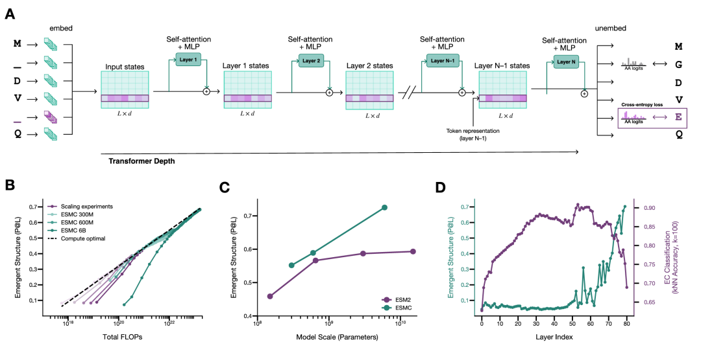
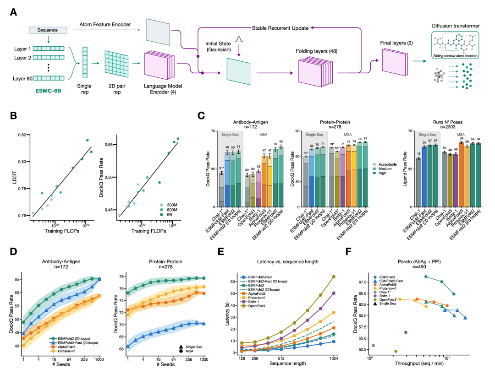
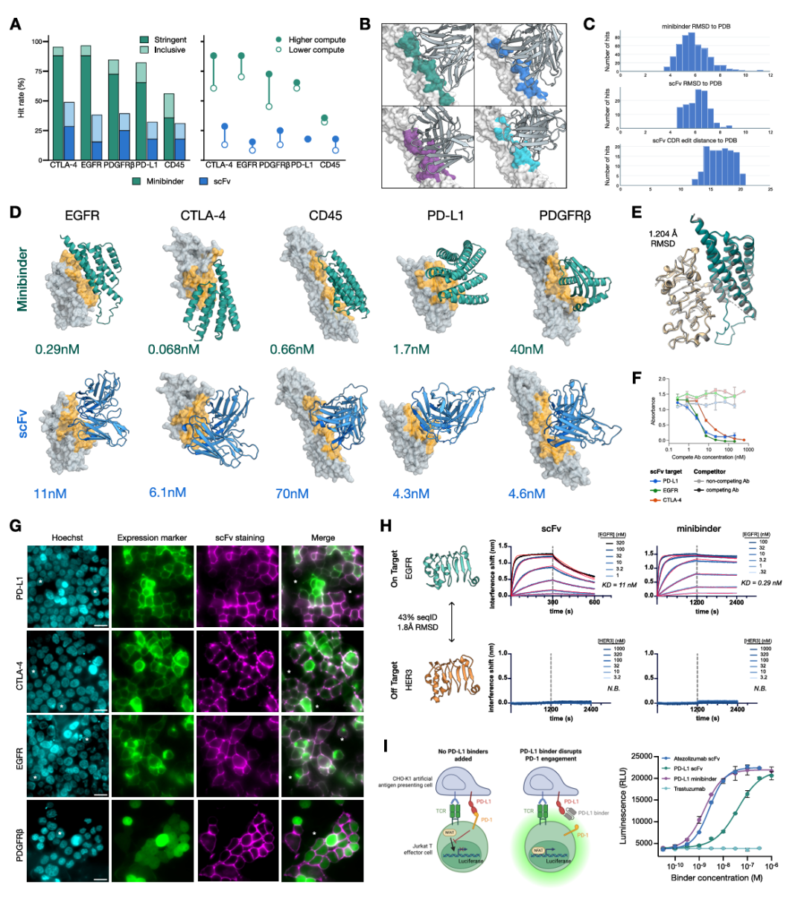
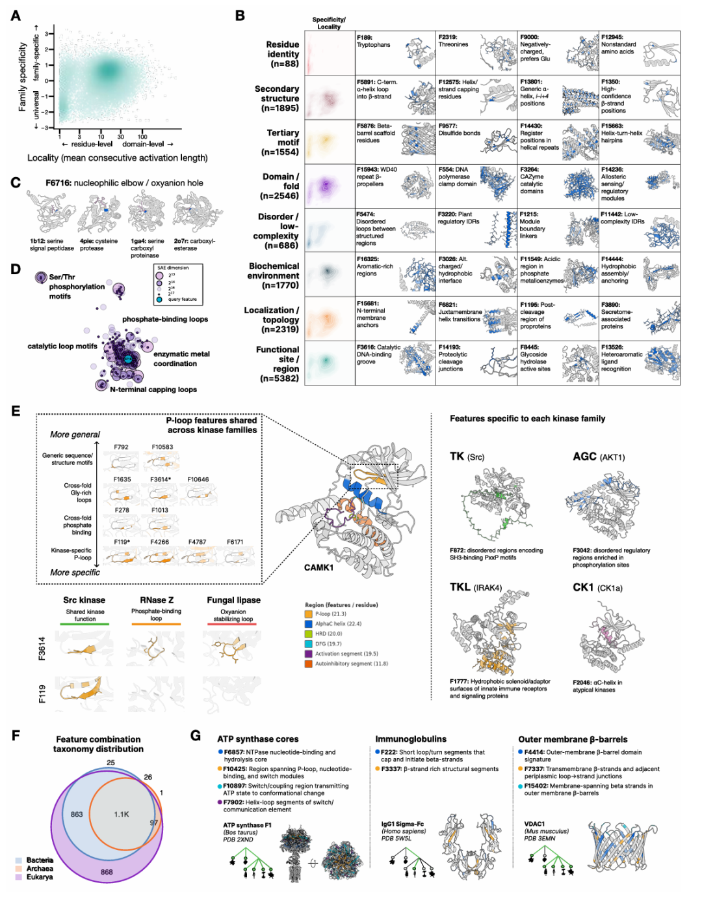
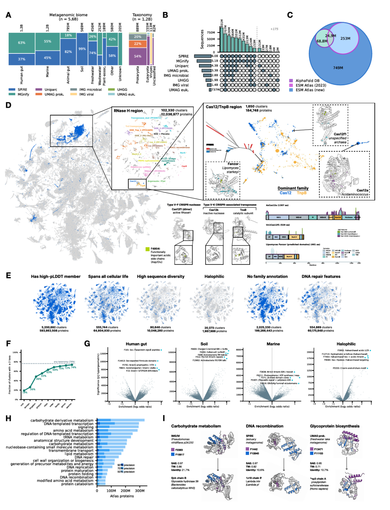

一直以来，ESM2 还被称为"蛋白质版的GPT"。而现在，它的创造者交出了一份完全不一样的答卷。
很多人对蛋白质大模型的第一印象，还是"根据序列猜结构"。
但如果只这样理解，就低估了这篇论文真正想做的事。
这篇题为《Language Modeling Materializes a World Model of Protein Biology》的论文，想证明的并不是"我们把结构预测又做强了一点"。
而是一个更大的命题：
如果把几十亿条蛋白质序列交给一个足够大的语言模型，它学到的会不会不只是序列规律，而是一套足以描述蛋白质结构、功能、相互作用乃至进化联系的"内部世界模型"？
作者的回答很激进，也很明确：会。
而且这种世界模型已经开始变成可用的科研和工程能力。
作者搭建了一个新的蛋白质语言模型家族——ESMC。
训练数据规模从 ESM2 时代的约 5000万 条序列，扩展到了约 28.06亿 条，其中大量来自宏基因组数据。
但作者真正关心的问题是：数据和算力继续上去之后，模型内部对蛋白质的理解会不会继续变强？
答案是：会。

换句话说，这不是"某个技巧调出来的效果"，而更像一条可以预期的能力增长曲线。
更有意思的是：结构信息和功能信息在模型不同深度的层里出现得并不完全一样。
这说明它内部并不是把所有生物学信息混成一团，而是在形成某种分层组织。
这一步非常关键。因为如果表征能力本身不稳定，后面一切结构预测、功能理解和分子设计都无从谈起。
接下来，作者把这种内部表征直接变成一个更强的结构预测系统——ESMFold2。
重点不是"再做一个 folding 模型"，而是证明：语言模型学到的表示，本身就足以支撑高水平的原子级结构预测。
和很多依赖 MSA 的方法不同，作者强调的是：哪怕从单序列出发，只要语言模型的表示足够强，依然可以得到非常高质量的复合物结构预测。

在抗体-抗原、蛋白-蛋白以及配体相关任务上，ESMFold2 在精度和速度上都很有竞争力。
这部分最值得注意的一点：作者把"序列表征能力"和"原子级预测能力"明确打通了。
过去大家常把蛋白质语言模型和结构预测模型看成两条线。现在这篇论文实际上在说：
前者不是后者的辅助特征，而可能就是后者最核心的知识来源。
如果论文只做到这里，它仍然可以被理解成一篇"更强结构预测"的文章。
真正把它拉到另一个层级的，是后面的分子设计结果。
作者问了一个更尖锐的问题：既然模型已经学会了什么样的序列会形成什么样的结构、什么样的界面，那它能不能反过来帮我们找到新的结合分子？
作者选了五个具有明显治疗意义的靶点：
PDGFRβ
EGFR
PD-L1
CD45
CTLA-4
然后设计了两种类型的分子去打实验：
minibinder（微型粘合剂）
scFv（单链抗体片段）
一边让语言模型评估候选序列像不像一个合理、可折叠、稳定的蛋白；一边让结构模型评估它是否有可能和靶点形成理想的结合界面。
然后在大批候选里做筛选和排序。
最有说服力的地方是：作者没有停在计算分数，而是一路把实验做到后面。

图3-1：实验室命中率直接受算力影响——多花4.5倍计算资源，9个靶点-模态中有8个命中率提升；从亲和力到功能，证据链完整——pM级亲和力、冷冻电镜验证、表位竞争、细胞功能，全部跑通。
作者在多个靶点和两种分子形式上都拿到了不低的实验成功率。而且当他们增加推理时的搜索规模之后，命中率还会进一步提升。
这说明"更多算力"不只是让模型分数更好看，而是真的会转化成更多实验里可验证的 binder。
多个设计分子的亲和力已经到了 nM 级，甚至更强。
冷冻电镜结构验证：计算模型预测的结合姿态和真实结构非常接近
竞争结合实验：分子不仅能结合，而且确实打在预定表位上
细胞染色和功能阻断实验：尤其在 PD-L1 体系中，设计得到的 binder 不只是"沾上去"，而是真的能恢复免疫通路信号
这组结果的意义很大。
因为它说明模型输出的不是"看起来像 binder 的序列"，而是一批在实验里真正表现出预期生物物理行为和细胞功能的候选分子。
如果说前面两部分是在回答"模型能不能做事"，那么接下来的部分就在回答一个更尖锐的问题：
它到底是怎么做到的？
作者用了稀疏自编码器（SAE） 方法——试图把原本纠缠在高维空间里的表征，拆成一组更稀疏、更容易解释的方向。

图4：SAE把黑箱拆成16384个可解释特征——从“通用且局部”到“专有且全局”，系统性地组织起来；模型用“搭积木”的方式表示激酶——通用特征描述柔性环，家族特异特征只在特定激酶中激活；模型学会了跨物种的功能语言——ATP合酶（通用）、免疫球蛋白（脊椎动物特有）、外膜β-桶（细菌+线粒体），和教科书一致。
模型内部确实存在很多不同层次的生物学特征：
有些对应特定氨基酸或氨基酸类别
有些对应alpha helix、beta sheet、loop这样的局部结构
还有一些对应更复杂的概念：金属配位、二硫键、催化位点、蛋白定位信号、翻译后修饰模式、跨家族共享的功能机制
作者强调：这些特征不是平铺的一堆标签，而是呈现出层级化和组合化。
越基础的性质越通用
越复杂的功能越特异
复杂功能往往由很多较基础的结构和化学特征拼出来
kinase 例子特别典型：
某些特征描述通用的柔性 loop
某些描述磷酸结合区域
某些只在特定 kinase 家族里激活
也就是说，模型好像不是在死记蛋白家族名称，而是在构造一种"从局部物理化学到高级生物功能"的内部语法。
这部分依然需要谨慎看待。因为"找到可解释方向"并不等于我们已经完全理解模型如何推理。
但至少从这篇文章看，蛋白质大模型的潜空间已经不再像过去那样只能当作完全无法触碰的黑箱。
它开始显露出可分析、可拆解、可与生物学知识对照的内部结构。
如果说前面还主要是在模型能力和机制层面推进，那么论文最后一步则把视角一下子拉到了"整个蛋白世界"。
作者基于这套表示，构建了一个覆盖 68亿 蛋白序列、包含 11亿 预测结构的超大规模 atlas。

图5：68亿蛋白被投射到一张二维地图上——即使序列相似度低至14%，模型仍能把功能相关的蛋白聚在一起；这张地图能帮你找到“失散多年的亲戚”——哪怕蛋白没有任何注释，模型也能通过结构相似性把它和已知功能联系起来。
而是因为作者试图说明：当你把数十亿蛋白放进同一个表示空间之后，哪怕序列相似度已经很低，模型依然可以把结构相近、功能相近、进化上有联系的蛋白拉到一起。
图中像 Cas12、TnpB、Fanzor 这些核酸酶相关蛋白的分布，就是很典型的例子
作者还展示了一些没有现成 Pfam 注释的蛋白——即使传统序列同源方法已经很难给出解释，这个新空间仍然可能通过结构和特征相似性，把它们和已知功能联系起来
过去我们面对大量宏基因组蛋白时，常见的情况是：
"知道它存在，但不知道它是什么，也不知道该从哪里下手。"
如果这种 atlas 式组织方式足够稳定，它就不只是一个陈列库，而会变成发现远程同源、寻找未知功能线索、筛选生物学热点区域的工作地图。
回头看整篇论文，作者其实是在努力统一四件过去经常被分开处理的事情：
序列建模
结构预测
分子设计
功能与进化组织
这恰恰是它最值得重视的地方。
过去做蛋白 AI，很多工作都是单任务最优：有人做结构，有人做功能，有人做设计，各自有各自的模型和范式。
而这篇论文试图说明：也许一个足够强的蛋白质语言模型，本身就能成为这些任务的共同表征底座。
结构预测不是孤立模块
设计也不是凭空优化
atlas 更不是单独建库
它们都建立在同一个不断扩展的内部表示空间上。
很多过去高度依赖湿实验吞吐量的工作，现在可以先在模型里大规模试，再把实验资源集中投给更可能成功的候选。
以前很多蛋白如果找不到足够近的序列同源，就很难再往前推进。
现在如果统一表示空间确实能同时抓住结构、功能和机制线索，那么大量"低同源、弱注释"的蛋白可能会被重新组织和重新命名。
特别是在 binder、抗体片段、界面工程这些方向，模型驱动的候选生成、排序和多轮虚拟筛选，很可能会成为常规前置环节。
这篇论文再强，也不代表"蛋白质问题已经被 AI 解决"。
它展示的是一个非常强的研究系统，而不是所有团队都可以轻松复制的日常工具链。
训练成本
推理算力
实验验证能力
筛选标准
工程优化环节
门槛都很高。
而且，能设计出高亲和力 binder，并不等于自动得到药物。成药性、免疫原性、体内稳定性、组织分布、生产工艺、毒理学，这些依然是漫长而昂贵的问题。
论文中关于潜空间解释性的部分也很有启发，但远远不是终点——它更像是刚刚打开了一扇门。
对这篇论文最恰当的理解，也许不是"它已经完成了什么"，而是"它把什么事情第一次连成了闭环"。
它把一个过去听起来很像愿景的命题，推进成了一个可以被逐段验证的系统：
先从海量蛋白序列中学出统一表征
再把这种表征转成结构预测能力
再用这种能力指导真实分子设计
再回过头分析潜空间机制
最后把整套表示扩展到覆盖整个蛋白世界的地图
这就是它真正的分量。
写到最后，我反而觉得这篇论文最值得反复咀嚼的，不是里面某个单独结果，而是它代表的一种新科研组织方式。
过去蛋白质科学很大程度上依赖两条路线：越来越精细的实验技术，和越来越强的专用计算方法。
而这篇文章代表的，是第三条路线逐渐成熟：
先让模型在超大规模自然数据中学出尽可能一般的规律，再把这些规律变成一个能承载预测、检索、设计和发现的虚拟实验平台，最后用真实实验不断校准它。
如果这条路线继续成立，未来几年蛋白质研究中最先发生变化的，可能并不是实验室本身，而是实验室之前的那一大段探索流程。
越来越多"该不该做、先做哪个、哪些最有希望"的问题，会先在数字空间里被试过一遍。
实验不会消失，实验的重要性也不会下降。
但在实验之前，会出现一个越来越强的计算前哨。
从这篇 ESM 新论文看，这个前哨已经不只是会看图识路，它开始能帮人选路、试路，甚至先替你走上一段。